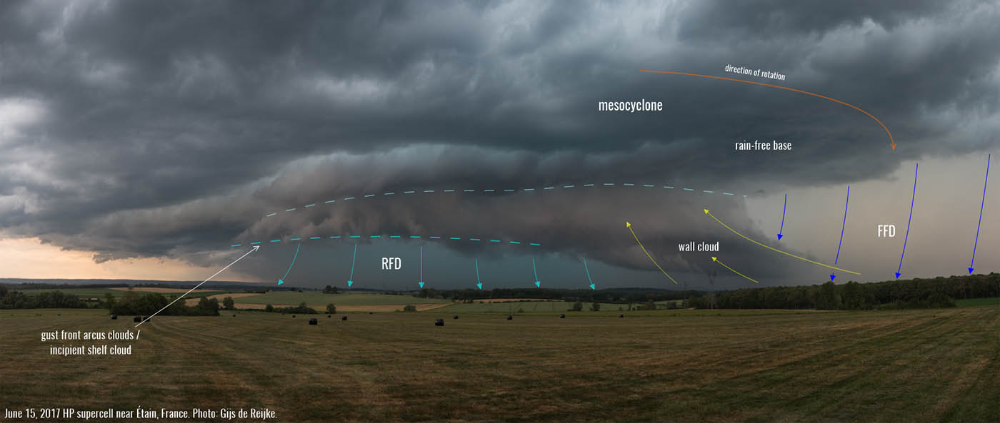

Understanding Supercell Structures
Start with a high-level overview. What is this phenomenon? Why is it important to meteorology? Make sure to use clear, accessible language for your readers.

Supercell Structure
Supercell thunderstorms are the most organized and dangerous type of convective storms.
Unlike ordinary storms, supercells possess a mesocyclone, a deep, persistently rotating updraft.
This rotation is fueled by wind shear, which allows the storm to tilt and separate its updraft from its downdraft, extneding the storm's lifespan.
The Wall Cloud
The Wall Cloud is a localized, persistent lowering from the rain-free base of the supercell. It forms where the storm's strongest updraft ingests warm, moist air.
- Identification: Look for a "step down" from the flat base of the storm.
- Significance: If the wall cloud is rotating, it is a primary indicator that a tornado may be imminent.
Beaver's Tail
The Beaver's Tail is a distinct, low-level cloud band that extends away from the main storm, usually toward the east or northeast. It looks like a long, flat appendage "feeding" into the storm's updraft.
- Identification: A smooth, broad cloud plume that looks like a beaver's tail or a long finger pointing back toward the mesocyclone.
- Significance: It represents an inflow jet, showing where the storm is sucking in warm and moist air to fuel its growth.
Inflow Notch
The Inflow Notch is a structural "gap" or indentation visible on both radar and in the field. It is the corridor through which the storm breathes.
- Identification: On radar, it appears as a "bite" taken out of the reflectivity. Visually, it is the clear or lightly clouded area leading directly into the updraft.
- Significance: This is the storm's intake. If the inflow notch is clear and well-defined, the storm is healthy and potentially intensifying.
Rear Flank Downdraft (RFD)
The Rear Flank Downdraft (RFD) is a region of dry, descending air on the backside of the storm. As it wraps around the mesocyclone, it plays a critical role in "pinching" the updraft to trigger tornadogenesis.
- Identification: Visually, the RFD often creates a clear slot—a patch of blue sky or bright light appearing behind the wall cloud as the descending air evaporates clouds.
- Significance: While necessary for many tornadoes, the RFD is also where high-velocity, straight-line winds occur.